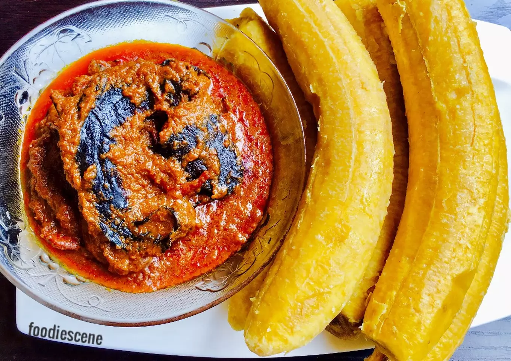

how to prepare YAM and OWO
ingredients needed
- YAM
- POTASH
- PALM OIL
- TOMATOES
- SALT
- MAGGIE
- ONIONS
- FISH OR MEAT YOUR CHOICE
preparation of yam and owo step by step
- firstly put the pot on the fire with your tomatoes and let it boil with your fish or meat
- secondly put your salt,Maggie,crayfish,onions,palm oil
- let it boil for up to five minute
- thirdly when it's thick to your satisfaction you add the potash
- fourthly you stir till the potash is all melted
- serve with yam or plantain

that will be all this time on sean's website hope you enjoy see you next time bye